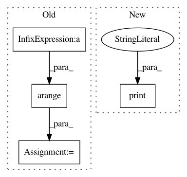

5980bd68fcd65ffe90fe560ff7db3f01e861426e,torch_geometric/transform/graclus.py,,normalized_cut,#Any#Any#,42
Before Change
// Append singleton values to the end.
singleton = cluster == -1
index = torch.arange(count, singleton.sum() + count).long()
cluster[singleton] = index
return cluster, torch.cat([cluster, index], dim=0), singleton
After Change
while row.dim() > 0:
print(row[0], col[0])
if row[0] == col[0]:
print("das darf nicht sein")
cluster[row[0]] = count
cluster[col[0]] = count
mask = (row != row[0]) & (row != col[0])
In pattern: SUPERPATTERN
Frequency: 3
Non-data size: 4
Instances
Project Name: rusty1s/pytorch_geometric
Commit Name: 5980bd68fcd65ffe90fe560ff7db3f01e861426e
Time: 2017-11-02
Author: matthias.fey@tu-dortmund.de
File Name: torch_geometric/transform/graclus.py
Class Name:
Method Name: normalized_cut
Project Name: dPys/PyNets
Commit Name: f4a629a3b9437fafb882793f59014f6ce31e86aa
Time: 2018-07-18
Author: dpisner@utexas.edu
File Name: pynets/nodemaker.py
Class Name:
Method Name: RSN_fetch_nodes_and_labels
Project Name: dPys/PyNets
Commit Name: f4a629a3b9437fafb882793f59014f6ce31e86aa
Time: 2018-07-18
Author: dpisner@utexas.edu
File Name: pynets/nodemaker.py
Class Name:
Method Name: WB_fetch_nodes_and_labels